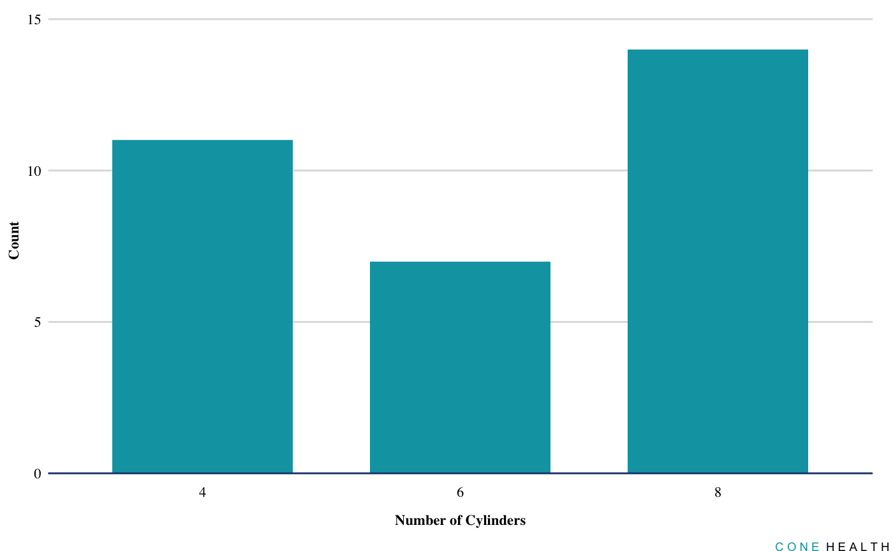

The goal of conethemes is to …
Installation
You can install the released version of conethemes from CRAN with:
Or the development version at :
This package borrows heavily from that of the Urban Institute
library(ggplot2)
library(conethemes)
#> Setting Mac/Linux options...
#>
#> Attaching package: 'conethemes'
#> The following objects are masked from 'package:ggplot2':
#>
#> geom_bar, geom_col, geom_jitter, geom_line, geom_path,
#> geom_point, geom_step, geom_text, scale_color_discrete,
#> scale_color_gradientn, scale_colour_discrete,
#> scale_colour_gradientn, scale_colour_ordinal,
#> scale_fill_discrete, scale_fill_gradientn, scale_fill_ordinallibrary(dplyr)
#>
#> Attaching package: 'dplyr'
#> The following objects are masked from 'package:stats':
#>
#> filter, lag
#> The following objects are masked from 'package:base':
#>
#> intersect, setdiff, setequal, union
theme_set(theme_bw())
set_cone_defaults(style = "print")
#> Warning: New theme missing the following elements: axis.ticks.length.x,
#> axis.ticks.length.x.top, axis.ticks.length.x.bottom, axis.ticks.length.y,
#> axis.ticks.length.y.left, axis.ticks.length.y.right
ggplot(data = mtcars, mapping = aes(factor(cyl))) +
geom_bar() +
scale_y_continuous(expand = expand_scale(mult = c(0, 0.1))) +
labs(x = "Number of Cylinders",
y = "Count") +
remove_ticks()
my_plot <- ggplot(data = mtcars, mapping = aes(factor(cyl))) +
geom_bar() +
scale_y_continuous(expand = expand_scale(mult = c(0, 0.1))) +
labs(x = "Number of Cylinders",
y = "Count") +
remove_ticks()
my_plot %>%
add_text_logo()